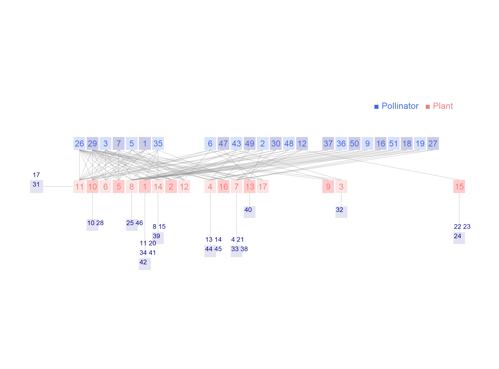

Network: M_PL_039

Pollinator 1 Amegilla.canifrons, 2 Amegilla.quadrifasciata, 3 Amegilla.sp1.M_PL_058, 4 Andrena.vucana, 5 Anthophora.alluardii, 6 Anthophora.orotavae, 7 Apis.mellifera, 8 Camponotus.rufoglaucus, 9 Coleoptera.sp14.M_PL_058, 10 Coleoptera.sp15.M_PL_058, 11 Coleoptera.sp16.M_PL_058, 12 Coleoptera.sp2.M_PL_058, 13 Coleoptera.sp29.M_PL_058, 14 Coleoptera.sp32.M_PL_058, 15 Coleoptera.sp33.M_PL_058, 16 Coleoptera.sp7.M_PL_058, 17 Cyclyrius.webbianus, 18 Diptera.sp10.M_PL_058, 19 Diptera.sp12.M_PL_058, 20 Diptera.sp19.M_PL_058, 21 Diptera.sp20.M_PL_058, 22 Diptera.sp25.M_PL_058, 23 Diptera.sp26.M_PL_058, 24 Diptera.sp27.M_PL_058, 25 Diptera.sp28.M_PL_058, 26 Eucera.gracilipes, 27 Hylaeus.sp1.M_PL_058, 28 Hymenoptera.sp24.M_PL_058, 29 Lasioglossum.evylaeus, 30 Lucilia.sp1.M_PL_058, 31 Macroglossum.stellatarum, 32 Sphecodes.marginatus., 33 Tachina.canariensis, 34 Thysanoptera.sp1.M_PL_058, 35 Unidentified.sp1.M_PL_058, 36 Unidentified.sp11.M_PL_058, 37 Unidentified.sp13.M_PL_058, 38 Unidentified.sp17.M_PL_058, 39 Unidentified.sp18.M_PL_058, 40 Unidentified.sp21.M_PL_058, 41 Unidentified.sp22.M_PL_058, 42 Unidentified.sp23.M_PL_058, 43 Unidentified.sp3.M_PL_058, 44 Unidentified.sp30.M_PL_058, 45 Unidentified.sp31.M_PL_058, 46 Unidentified.sp34.M_PL_058, 47 Unidentified.sp4.M_PL_058, 48 Unidentified.sp5.M_PL_058, 49 Unidentified.sp6.M_PL_058, 50 Unidentified.sp8.M_PL_058, 51Unidentified.sp9.M_PL_058
Plant
1 Argyranthemum frutescens, 2 Bituminaria bituminosa, 3 Ceballosia fruticosa, 4 Convolvulus floridus, 5 Echium aculeatum, 6 Echium plantagineum, 7 Euphorbia canariensis, 8 Euphorbia obtusifolia, 9 Fagonia albiflora, 10 Galactites tomentosa, 11 Lavandula buchii, 12 Lotus glaucus, 13 Oxalis pes-caprae, 14 Plocama pendula, 15 Scandix pecten-veneris, 16 Sideritis argosphacelus, 17Sideritis nervosa
Stald L (2003). Struktur og dynamik i rum og tid af et besti�vningsnetvaerk pa Tenerife, De Kanariske Oer. Msc thesis (Univ of Aarhus, Aarhus, Denmark). Tenerife, Canary Islands